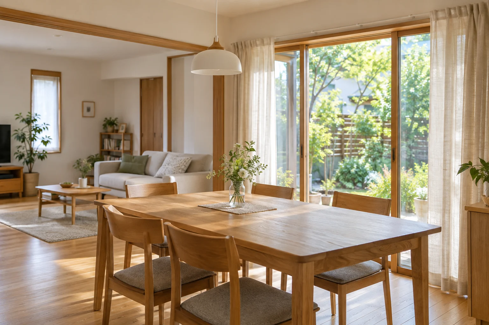

自分で選ぶことを大切に
ご本人の希望を伺い、生活の状況に合わせた個別支援計画を作成します。「こう暮らしたい」を一緒に考え、自分で選び、決めることを支えます。

住まいのイメージ凪（なぎ）は、障がいのある方が地域で安心して暮らすための、介護サービス包括型グループホームとして、開所準備を進めています。ご本人の希望や生活の状況に合わせて、日常生活・健康管理・社会参加を支えます。
大切にしているのは「見逃さない支援」。いつもと違う表情や体調、気持ちの小さな変化に目を向け、ご本人の声に耳を傾けます。自分で選び、決めることを尊重しながら、一人ひとりに合った支援計画を一緒に考えます。
出会いを大切に。暮らしに、安心を。凪
落ち着ける自分の部屋と、
自然と顔を合わせる共有スペース。
静かな住宅街で、穏やかに過ごす毎日。
食事や会話を楽しみながら、自分の時間も大切にできる住まいです。
ご本人の希望を伺い、生活の状況に合わせた個別支援計画を作成します。「こう暮らしたい」を一緒に考え、自分で選び、決めることを支えます。
食事・入浴・排泄など、必要な支援を相談します。掃除・洗濯・買い物も、できることを活かして支えます。頼み方や断り方、困ったときの相談などを、本人の希望に合わせて日々の生活の中で練習します。
朝食・夕食の提供と、服薬・日々の健康状態の確認を計画しています。主治医等との連携を大切にし、訪問看護・訪問診療の導入に向けて調整しています。
夜間は各棟に支援職員を配置する計画です。生活上のサポートや急な体調変化に対応し、必要に応じて医療機関やご家族に連絡します。
季節の行事や誕生日会、地域のイベントなど、希望に合わせた余暇活動を大切にします。買い物や外出の経験を、暮らしの自信につなげます。参加を強制せず、何もしない時間や一人で過ごす時間も尊重します。
ご家族や相談支援専門員、日中の通所先・職場と連携し、生活と日中活動の両面から支えます。お金の使い方や管理についても相談できます。
朝食、服薬の確認、身支度。通勤・通所の予定に合わせて、必要な声かけや準備を支えます。
平日はお仕事や日中活動へ。休日は散歩・買い物・趣味など、希望に合わせて過ごします。体調不良等でホームにいる日の支援も相談します。
夕食、入浴、団らんや一人の時間。就寝時刻を一律に強制せず、生活リズムとプライバシーに配慮した夜間の見守りを計画しています。
ご本人も、ご家族も、支援者の方も。
まずはお気軽にご相談ください。
18歳以上の知的障がい・精神障がい・身体障がい・難病のある方など、障がいの種類を限定せずにご相談をお受けします。ご本人の希望や必要な支援、住まいの設備との適合を確認しながら、入居を一緒に検討します。ご利用には、共同生活援助の支給決定が必要です。
現在、料金と利用条件を調整しています。確定後、月額の目安・内訳・別途必要な費用を掲載します。福祉サービスの利用者負担や、医療費・個人の買い物等についても、ご契約前にご説明します。
暮らしの希望や気になることを、お聞かせください。
お部屋やホームの雰囲気を、実際にご覧いただきます。
契約前の体験利用で、ホームの雰囲気や支援を確認。ご本人の意向を伺い、入居の準備を進めます。
慣れるまでゆっくりと。新しい毎日を一緒に整えます。
見学の受付時期・日程は開所準備の進捗に合わせてご案内します。ご本人だけでなく、ご家族や支援者の方と一緒の見学もご相談ください。
現在のお仕事や日中活動を大切にしながら暮らせるよう、ご希望や通所先との距離などを一緒に確認します。
日常生活の相談、食事・入浴・排泄などの支援、服薬や健康管理、日中の通所先との連絡調整などを行う計画です。必要な支援は、ご本人の希望や状態を伺って個別に相談します。
ご状況に応じて必要なお手続きをご案内します。相談支援専門員の方がいらっしゃる場合は、一緒にご相談いただくとスムーズです。
朝食・夕食を提供する計画です。提供時刻は、ご本人の体調や生活リズム、通勤・通所の予定に合わせて調整します。休日の昼食や食事への配慮についても、必要な支援と提供体制を個別に確認します。
正式な契約の前に、体験利用でホームの雰囲気や暮らし方を確認していただく計画です。期間・費用・利用条件は、ご状況に合わせてご案内します。
ご家族の面会については、事前に日時をご相談ください。他の入居者の生活リズムにも配慮しながら、面会をご案内します。
グループホーム「凪」の運営法人は、
株式会社壱期です。
小さな疑問も、これからの暮らしのことも。
どうぞお気軽にお聞かせください。
ご本人・ご家族・支援者の方からの
ご相談を受け付けています。